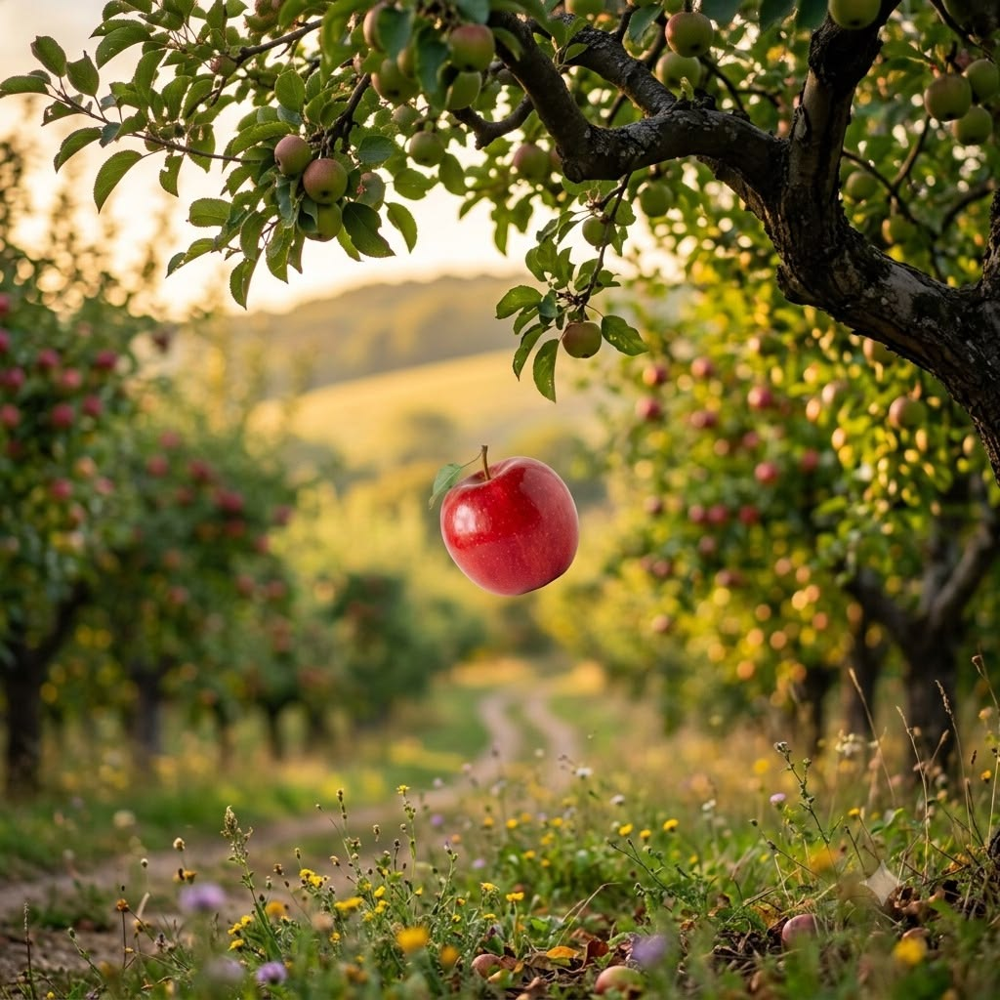
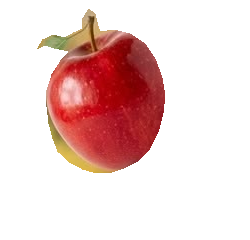

JOIamae · CS student & creative
Ideas
grow here.
A curious mix of graphic design and code. Scroll a little and say hello to .JO.
SCROLL TO BEGIN ↓

PROGRAMMERWEB DEVELOPERGRAPHIC DESIGNERUI / UX DESIGNERCREATIVE THINKERPROBLEM SOLVERCS STUDENT
Learn More ↓01 — THE .JO UNIVERSE
JUST
OPEN ✳
OPEN ✳
Welcome to my little universe
Two sides.
One open mind.
I’m Joiamae — a computer science student who also loves making visuals. This portfolio brings my designs, code, and the ideas between them together.
Curiosity got you this far.
Let’s make something good. ↗